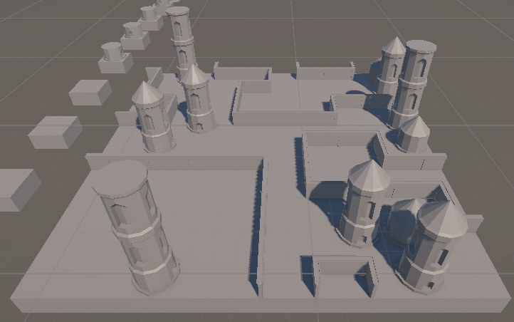
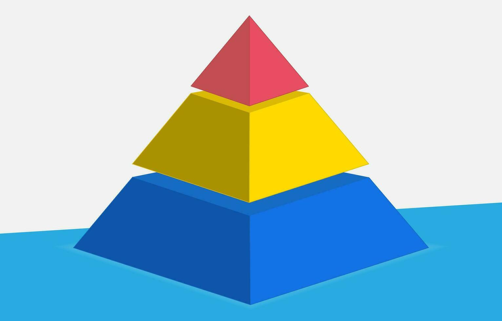

UE5 Level Design
A PROD387 Project
- Level Design
- Unreal Engine 5
- Blockout
- Environment Art
- Blockout
- 3D
Iterations Overview
- 1
- 2
- 3
- 4
- 5
- 6
- 7
-

Final Outcome
Wave function collapse is a constraint solving program that operates
using nodes with defined sockets.
The sockets tell the program which nodes can connect,
and the available nodes slowly collapse to fill out the 3d grid.
Maps
There is only a top-down map due to the towering nature of the level. It shows how the player spirals up the tower and finally reaches the copter at the top.
The player starts at the bottom of the map on the yellow path, and each major elevation change is shown using a new path color.

Creative Phase
In the creative phase, I set up vertical sockets, finally allowing 3D generation.
I created basic 3D nodes, towers, walls, rooves. Weights were used to control the likelyhood of different nodes, and I added pauses between the placement of each element to display the generation.
Further Development
Further development will include more layers put onto the algorithm, with randomly generated points of interest, and the buildings built around them.
After this, it can be used within other projects that require civilization or cities.
